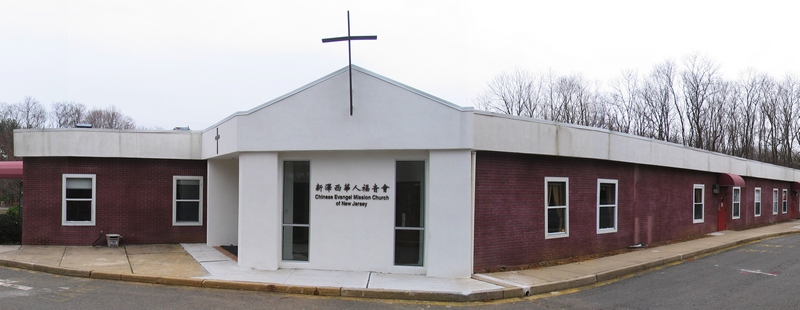

2019 Church Theme: Believe and See the Glory of God
2019 教會主題︰堅定信心 見主榮耀
| Sunday Services (English) | 主日崇拜（中文） | |
| May 5: Pastor Samuel Yu | 五月五日︰陳永建牧師 | |
| May 12: Pastor Joseph Feun | 五月十二日︰陳永建牧師 | |
| May 19: Pastor Samuel Yu | 五月十九日︰陳永建牧師 | |
| May 26: Pastor Samuel Yu (camping) | 五月二十六日︰陳永建牧師 |
|
Chinese Evangel Mission Church of New Jersey serves both the local and
distant community
members in the New Brunswick and East Brunswick area.
Our church has three main services: English, Mandarin Chinese, and Children's. We also have many fellowships to help you to grow spiritually. Our Sunday worship service for English congregation follows after Sunday school. We invite you to worship the Lord Jesus Christ with us. 新澤西華人福音會是服務于 New Brunswick 和 East Brunswick 社區以及其他地區的教會。 我們教會有三堂崇拜，英文，國語和兒童，還有許多其他團契活動。所有這些都能幫助你靈命的成長。 每星期天主日崇拜後有主日學。 我們歡迎你加入我們一起來敬拜主耶穌基督。
|
| 11 Lexington Avenue, East Brunswick, NJ 08816 | |||
| 陳永建主任牧師 | Rev. Norman Chen, Senior Pastor | 732 238-8811 | |
| 于尚冕英文堂傳道 | Samuel Yu, English Congregation Pastor | 732 939-3563 | |